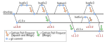

Development¶
This page describes the protocol adopted for the AMDC firmware code development.
The AMDC firmware code base uses: git for version control; semantic versioning for release labeling.
Tip
Read about semantic versioning on the main semver.org website. This greatly helps to explain the concepts below.
Branches in git¶
{kind=link}
All development intended to impact a future release is done on topic branches from the latest develop branch.
This applies to bug fixes, feature additions, and/or major changes.
The develop branch is not stable – the latest commits to develop might yield unstable code which is still in testing.
Regular open-source development practice is followed – pull requests (PRs) are used to review new code and then eventually are merged into develop.
Merges into
developshould useSquash and Mergevia GitHub’s online interface.Merges into release branches should use the simple
Mergecommit via GitHub’s online interface.
Each PR should be small enough to reasonably review – if a PR has too many files changed or covers too large of scope, the developer will be asked to reduce the PR size by creating multiple smaller PRs.
Releases¶
Per semantic versioning, there are three types of releases:
Major
Minor
Bug fix
To create a release, a snapshot of the code is taken and labeled as: vA.B.C where A denotes the major release number, B denotes the minor number, and C denotes the bug fix number. For example, a release might be called v1.0.0 or v1.5.12.
A so-called release branch refers to a labeled major and minor release, but unspecified bug fix.
The naming pattern is: vA.B.x where A and B are numbers and x denotes any bug fix number.
For example, the initial release branch is called v1.0.x.
Procedure¶
Tip
Refer to the diagram above for a graphical representation of how the git branching should work.
The procedure for creating a new release is mostly common for all three types (major, minor, bug fix):
Update code via topic branches which are based on
developand merge updates intodevelopEnsure development has stablized on the
developbranchEnsure thorough testing of the latest
developbranch codeCreate a final commit to
developwhere the./CHANGELOG.mdfile is updated with documentation about the new release
Now, depending on which type of release, the procedure differs:
Bug Fix¶
For a new bug fix release, a release branch should already exist.
To publish the bug fix, simply merge the bug fix from develop into the appropriate release branches.
This should be done via a PR on GitHub and the PR should perform a regular merge commit, not a Squash + Merge.
Attention
You might need to merge the bug fix into multiple release branches, depending on how widespread the bug is.
Always merge in one direction, from develop to the release branches.
Occasionally, a bug might need to be fixed in a previous release branch, but does not exist in the latest develop branch.
In this case, do not change develop – simply fix the bug where it needs to be fixed.
This is depicted in the above diagram as the hotfix1 branch.
Minor or Major¶
For a new minor or major release, a new release branch needs to be created.
Create a new release branch from
developand call itvA.B.xUpdate GitHub’s default repo branch to be the latest release branch which was just created
Update the documentation website to reflect the minor or major (breaking) changes
Tag and Release¶
After following the above steps, the release branch(es) will hold the latest stable code release. Users which checkout the release branch will have access to the code.
To complete the release, git tag(s) need to be created and GitHub release(s) need to be created.
Create git tag(s) pointing to the merge commit(s) on the release branch(es). If the new code was only merged to one release branch, only one tag will be created. However, if a bug fix was merged to multiple release branches, then the appropriate version number should be used to tag each merge commit.
For each new git tag, create a GitHub Release with the same name as the tag and include a description of the changes per the changelog contents.